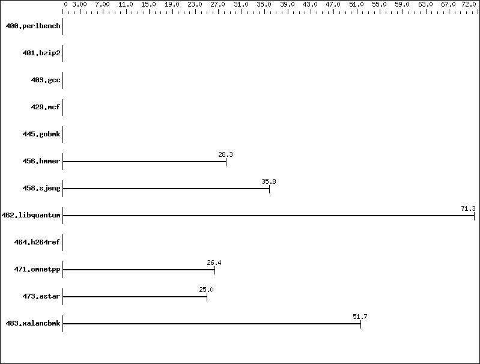

Invalid SPEC® CINT2006 Result
Copyright 2006-2008 Standard Performance Evaluation Corporation
Tyan
Tyan Thunder KKQS Pro (S4882)

'reportable' flag not set during run
471.omnetpp (base) did not have enough runs!
456.hmmer (base) did not have enough runs!
445.gobmk (base) did not have enough runs!
458.sjeng (base) did not have enough runs!
429.mcf (base) did not have enough runs!
473.astar (base) did not have enough runs!
483.xalancbmk (base) did not have enough runs!
400.perlbench (base) did not have enough runs!
464.h264ref (base) did not have enough runs!
462.libquantum (base) did not have enough runs!
401.bzip2 (base) did not have enough runs!
403.gcc (base) did not have enough runs!
Unknown flags were used! See
http://www.spec.org/cpu2006/Docs/runspec.html#flagsurl
for information about how to get rid of this error.
400.perlbench: -DSPEC_CPU_LINUX_IA32
462.libquantum: -DSPEC_CPU_LINUX
C base flags: -O2
C++ base flags: -O2
Fortran base flags: -O2
| 456.hmmer: |
"clang -flto -m32 -Wl,--allow-multiple-definition" (in CC)
"clang -flto -m32 -Wl,--allow-multiple-definition" (in LD)
"-O2" (in COPTIMIZE)
|
| 458.sjeng: |
"clang -flto -m32 -Wl,--allow-multiple-definition" (in CC)
"clang -flto -m32 -Wl,--allow-multiple-definition" (in LD)
"-O2" (in COPTIMIZE)
|
| 462.libquantum: |
"clang -flto -m32 -Wl,--allow-multiple-definition" (in CC)
"clang -flto -m32 -Wl,--allow-multiple-definition" (in LD)
"-O2" (in COPTIMIZE)
|
| 471.omnetpp: |
"clang++ -flto -m32 -Wl,--allow-multiple-definition -std=gnu++03" (in CXX)
"clang++ -flto -m32 -Wl,--allow-multiple-definition -std=gnu++03" (in LD)
"-O2" (in CXXOPTIMIZE)
|
| 473.astar: |
"clang++ -flto -m32 -Wl,--allow-multiple-definition -std=gnu++03" (in CXX)
"clang++ -flto -m32 -Wl,--allow-multiple-definition -std=gnu++03" (in LD)
"-O2" (in CXXOPTIMIZE)
|
| 483.xalancbmk: |
"clang++ -flto -m32 -Wl,--allow-multiple-definition -std=gnu++03" (in CXX)
"clang++ -flto -m32 -Wl,--allow-multiple-definition -std=gnu++03" (in LD)
"-O2" (in CXXOPTIMIZE)
|